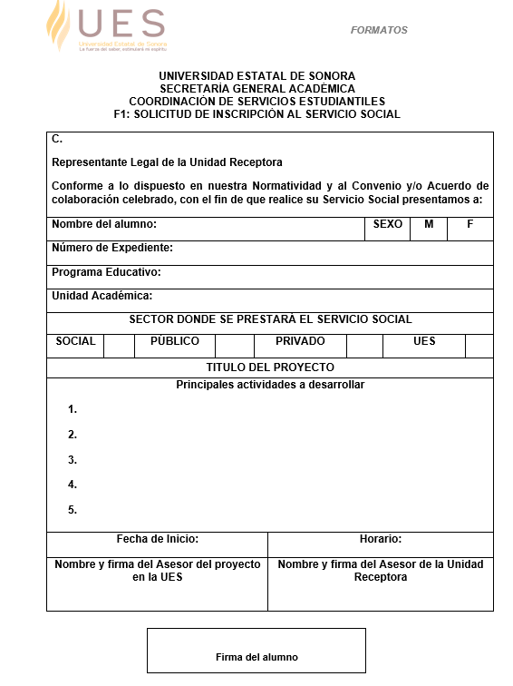
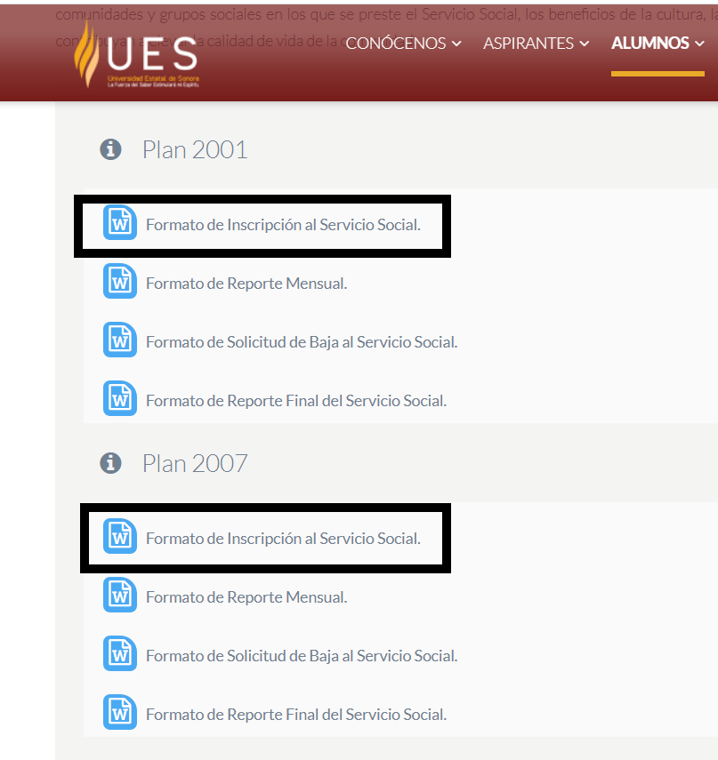

SEGUNDO PASO: Inscribirse en un proyecto de Servicio Social.
Una vez cumplido con los requisitos mencionados en el Primer Paso, pueden darse de alta en un proyecto de su elección, Cada estudiante elige el lugar donde va a realizar el Servicio Social. La institución cuenta con 84 proyectos donde pueden realizarlo, de los cuales hay proyectos internos y externos. El SS no es al perfil de su programa académico, es independiente al tipo de carrera que están inscritos, por lo que podrán darse de alta en cualquier proyecto que se ofrece. Es una retribución que se le hace a la sociedad sin remuneración a cambio. En este momento dada la situación todos están de forma virtual.
Para que puedan hacer el SS fuera de la UES, el proyecto será externo y se requiere que haya un Convenio o Acuerdo de Colaboración firmado por la UES y la Unidad Receptora. De esos convenios nace un proyecto. Se podrá hacer el Servicio Social hasta que estén autorizados dichos proyectos.
A continuación, se muestra el catálogo de proyectos de Servicio Social, los cuales podrán bajar a su equipo de cómputo para analizarlos detenidamente.
.
Una vez que elijan el proyecto donde realizar el Servicio Social, deben contactar vía electrónica con el asesor de dicho proyecto. Junto con el nombre del proyecto, tienen disponible en el documento el nombre del asesor, así como el correo electrónico por el cual podrán comunicarse con él y preguntar al respecto de que se trata, en que consiste, la cantidad de horas, de todo lo que conlleva. El asesor les dirá si hay cupo en el proyecto en ese momento.
Si hay disponibilidad en el proyecto, podrán inscribirse sin problema de forma virtual. Para lo cual, será necesario que cada estudiante llene el formato F1 que se encuentra en la página Web de UES en la sección ALUMNOS- SERVICIOS ESTUDIANTILES -SERVICIO SOCIAL. Todos los formatos pueden localizarlos ahí (F1, F2, F4, Reporte Final). Pueden considerar el formato de cualquiera de las dos modalidades Plan 2001 o Plan 2007, son los mismos formatos.
La fecha de inicio será la fecha en la cual se envía el formato al asesor del proyecto. A partir de ahí empieza a contarse el tiempo de desarrollo del Servicio Social. El horario es indistinto, no hay un horario fijo para ello.


Una vez llenado debidamente el F1 Solicitud de Inscripción al Servicio Social, debe ser firmado por el alumno, para su posterior envío al asesor del proyecto, para que lo firme y lo valide. Es el asesor quien debe enviarlo posteriormente al área de SS donde se dará inicio a la captura en el sistema correspondiente. .
..
NOTAS IMPORTANTES EN ESTE PUNTO:
- Debe contener todas las firmas, la firma del asesor (receptor) y la del estudiante. Si falta alguna firma, no será posible inscribirse.
- Todas las solicitudes que llegan por parte de los estudiantes al área de Servicio Social No son consideradas, No se les da seguimiento, deben llegar directamente del asesor del proyecto ya sea interno o externo.
- El sello es importante que se establezca como parte del Formato.
- En el caso de los proyectos externos es importante solicitar una carta de aceptación, en los proyectos internos ya saben los asesores que se debe generar.
.
.